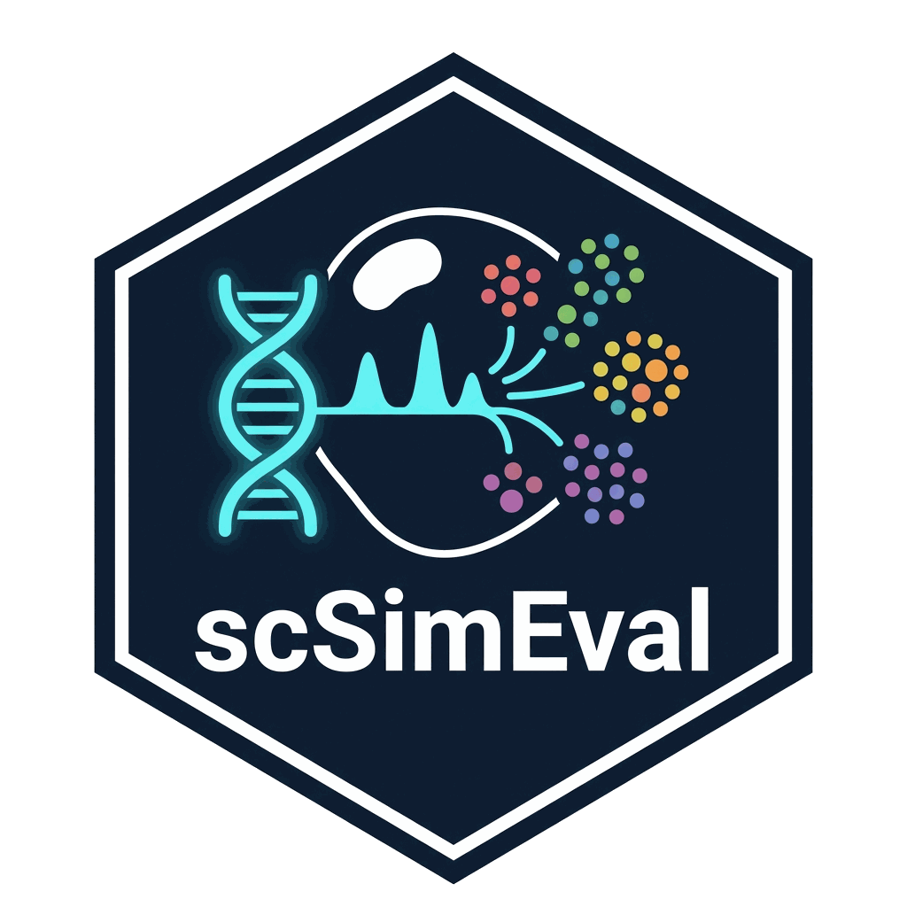
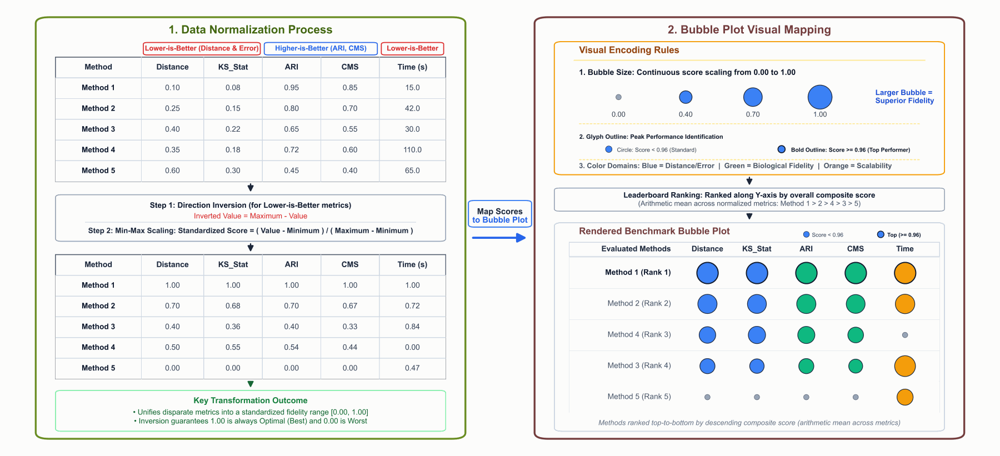

scSimEvalStudio: Interactive Shiny Studio for Single-Cell Multiomics Simulation Benchmarking


1. Scientific Overview & Multiomics Experimental Design Coverage
scSimEvalStudio (version 0.99.3) is the interactive graphical benchmarking studio companion to scSimEval (version 0.99.12). Single-cell and multiomics simulation algorithms are indispensable for benchmarking computational methods, conducting in silico power analyses, and evaluating data integration pipelines. However, synthetic datasets only provide valid benchmarks if they faithfully recapitulate the statistical distributions, technical dropout kinetics, high-dimensional cellular manifolds, batch confounder structure, differential regulatory signals, lineage topology, and cross-modal coupling of empirical biological tissues.
scSimEvalStudio operationalizes reference-based simulation benchmarking by comparing one or more synthetic datasets () directly against an empirical biological reference dataset () across 56 curated quantitative evaluation measures organized into 8 canonical biological and computational categories.
Supported Single-Cell & Multiomics Experimental Designs
Built natively on Bioconductor SingleCellExperiment S4 containers (with automatic one-line conversion from Seurat objects via Seurat::as.SingleCellExperiment()), scSimEvalStudio supports four experimental design architectures:
| Experimental Design | Primary Assay & S4 Representation | Required colData Annotations |
Active Categories | Curated Measures Evaluated |
|---|---|---|---|---|
1. Unimodal scRNA-seq |
Gene × cell raw UMI/read count matrix (assay(sce, "counts"), sparse dgCMatrix) |
cell_type (Cat III, V) & batch (Cat IV, V) |
7 Categories (I–V, VII, VIII) | 44 Measures |
2. Unimodal scATAC-seq |
Peak/bin × cell raw chromatin fragment/insertion matrix (assay(sce, "counts")) with TF-IDF latent semantic indexing |
cell_type (Cat III, V) & batch (Cat IV, V) |
6 Categories (I–V, VIII) | 38 Measures |
| 3. Paired Co-Assay Multiomics | Simultaneous scRNA-seq + scATAC-seq across identical cell barcodes (1-to-1 correspondence via altExp(sce, "ATAC") or list(RNA = rna_sce, ATAC = atac_sce)) |
Shared cell_type & batch across paired barcodes |
All 8 Categories (I–VIII) | 56 Measures (50 Bubble Matrix Columns) |
| 4. Unpaired Multiomics | Independent scRNA-seq and scATAC-seq SingleCellExperiment objects profiled from the same biological tissue without shared barcodes |
Modality-specific cell_type & batch coupled in joint stacked latent space |
All 8 Categories (I–VIII) | 56 Measures (50 Bubble Matrix Columns) |
2. End-to-End Architecture & The 8-Category / 56-Measure Taxonomy
scSimEvalStudio orchestrates a four-stage evaluation workflow connecting data ingestion, parallelized statistical estimation, direction-aware mathematical score normalization, and interactive visual analytics:

Figure 1 | The 4-Stage scSimEval & scSimEvalStudio Benchmarking Architecture. (1) Multi-modal data ingestion and S4 validation for unimodal scRNA-seq, unimodal scATAC-seq, paired co-assay multiomics, and unpaired multiomics; (2) multi-core evaluation across 56 curated measures in 8 canonical categories; (3) direction-aware normalization onto a unified [0.00, 1.00] fidelity scale; and (4) visual analytics, multidimensional ordinations, and reproducible script/report exports.
Summary of the 8 Canonical Evaluation Categories (56 Measures)
| Category | Biological / Computational Domain | Measures | Statistical Formulation & Biological Scope |
|---|---|---|---|
| I | Distributional Properties | 14 | 10 univariate (1D) distances (Wasserstein, KS, MAD, MAE, RMSE, Bhattacharyya, KDE_ISE, Runs_Statistic, NN_Mismatch, Between_Dataset_Silh_Global) and 4 bivariate (2D) distances (Fasano_Franceschini_2D_KS, EMD_2D, NN_Mismatch_2D, Between_Dataset_Silh_2D_Global) evaluated across 18 empirical properties: 7 cell-level (library_size, log_library_size, tmm_factor, zero_fraction_cell, detection_freq_cell, cell_cor, pca_dist), 7 feature-level (mean_expression, variance, scaled_variance, cv, zero_fraction_feature, dispersion, gene_cor), and 4 bivariate pairs (lib_vs_cellzero, mean_vs_sd, mean_vs_featzero, mean_vs_dispersion). |
| II | Sparsity & Zero-Inflation Dynamics | 5 | Parametric logistic dropout kinetics (midpoint_error , slope_error , goodness-of-fit r2_discrepancy), scATAC-seq quadratic accessibility-sparsity curve residual error (curve_rmse), and technical excess zero-inflation weight divergence (excess_zero_weight_discrepancy). |
| III | Cellular Manifold & Clustering Concordance | 8 | High-dimensional topology and unsupervised clustering fidelity: multi-scale RBF kernel Maximum Mean Discrepancy (MMD), k-NN manifold support Generative_Precision (penalizes hallucinated states) and Generative_Recall (penalizes mode collapse), cell-type Average Silhouette Width (silhouette_sim), penalized likelihood Clustering Deviation Index (cdi), local k-NN neighborhood_purity, Adjusted Rand Index (ari), and Normalized Mutual Information (nmi). |
| IV | Technical Variation & Batch Mixing Dynamics | 5 | Technical batch confounder preservation and local neighborhood intermixing: batch_silhouette, Principal Component Regression variance explained (pcr_r2), Cell-Specific Mixing Score (cms; Lütge et al., Life Sci. Alliance 2021), Local Inverse Simpson's Index (isi; Korsunsky et al., Nat. Methods 2019), and held-out cross_batch_F1 transfer classification. |
| V | Biological Signal & Differential Fidelity | 12 | Replicate-aware cell-type × batch pseudobulk aggregation (to_pseudobulk()) followed by negative binomial quasi-likelihood F-testing (edgeR::glmQLFit / glmQLFTest; Squair et al., Nat. Commun. 2021; Duo et al., Genome Biol. 2024; Teo et al., Nat. Commun. 2024). Evaluates 6 scRNA-seq DE and 6 binarized scATAC-seq DA metrics: null p-value uniformity (pval_dist_score), binary accuracy, precision, recall, harmonic f1_score, and threshold-free ranking auc (ROC-AUC). |
| VI | Multiomics Integration & Alignment | 5 | Cross-modal joint latent space alignment (scib, scMultiSim, scCross, Matilda, scMoMtF): Cross-Modal batch_asw, Joint cell_type_asw, k-NN graph_connectivity, integration_ari, and integration_nmi. |
| VII | Trajectory & Lineage Topology | 5 | HVG-filtered dynverse milestone network inference on scRNA-seq (Saelens et al., Nat. Biotechnol. 2019): Hamming–Ipsen–Mikhailov graph topology similarity (him), edge_flip graph edit similarity, pairwise pseudotime geodesic_correlation, branch assignment F1_branches, and Ranger Random Forest driver gene importance weighted correlation (wcor_features). |
| VIII | Computational Scalability & Efficiency | 2 | Hardware-normalized computational cost across heterogeneous CPU allocations: Cumulative CPU execution work (core_seconds) and per-core resident memory footprint (memory_per_core_mib). |
3. Direction-Aware Mathematical Score Normalization & Hierarchical Aggregation
Raw evaluation measures span incompatible physical units and optimization directions (e.g., unbounded transport distances and core-seconds where lower values are superior, zero-centered statistics such as Wald–Wolfowitz Runs and Batch Silhouette where is ideal, and bounded concordance indices such as ARI, NMI, and ROC-AUC where is optimal). scSimEvalStudio transforms every raw measurement (Score_Raw) through a two-stage direction-aware normalization pipeline (scSimEval::normalize_bubble_scores()):

Figure 2 | Two-Stage Direction-Aware Mathematical Normalization & Hierarchical Aggregation Pipeline. Raw measurements (Score_Raw) are direction-aligned and scaled onto a unified [0.00, 1.00] fidelity scale (where 1.00 denotes optimal empirical reference concordance), aggregated into category means, and combined into the composite Overall Score.
-
Direction Alignment & Fidelity Scaling: For simulator and metric with raw value :
- For zero-targeted statistics (
Runs_Statistic,Between_Dataset_Silh_Global,Between_Dataset_Silh_2D_Global,batch_silhouette), divergence magnitude is first taken as . - For lower-is-better distance, error, and computational cost measures ( or ), scores are inverted and min-max normalized across the evaluated simulator cohort:
- For higher-is-better similarity and classification fidelity measures (e.g.,
ari,nmi,auc,f1_score,him,cms,isi), values are scaled directly so that higher fidelity maps toward :
- For zero-targeted statistics (
-
Category-Level & Overall Composite Aggregation:
- In Category I, property-level normalized scores across the 18 empirical distributions are averaged per metric to yield 14 consolidated distributional metric scores.
- Within each active category containing evaluated measures, the category fidelity score is the arithmetic mean:
- The unweighted Overall Composite Score () weights each active biological and computational dimension equally across all active categories ( for scRNA-seq, for scATAC-seq, for paired/unpaired multiomics):
Both the unnormalized physical measurement (Score_Raw) and the normalized fidelity score (Score) are preserved in all interactive tables and downloadable archives.
4. Overview of the 8 Interactive Modules in scSimEvalStudio
Launching scSimEvalStudio::launch_scSimEval_app() opens a modern Bootstrap 5 (bslib Flatly + high-contrast Dark Mode) analytical workspace organized into 8 top-level navigation tabs:
| Tab # | Module Name | Core Analytical & Diagnostic Capabilities |
|---|---|---|
| 1 | Home | Executive KPI ribbon (56 measures, 8 categories, 3 modality classes, [0.0, 1.0] scale), 8-category overview grid, and 3-stage pipeline quick-jump controls. |
| 2 | Data Hub | 4 Ingestion Modes: (1) scRNA-seq, (2) scATAC-seq, (3) Paired & Unpaired Multiomics, and (4) Upload Saved Results (.rds / .csv). Includes 1-click Oryza sativa Rice Bud (6 simulators) and Glycine max Soybean Root (3 simulators) empirical benchmarks, custom .rds upload (SingleCellExperiment or auto-converted Seurat), per-simulator runtime/RAM/core inputs, incremental benchmark appending, and a 1-Click Standalone HPC/Workstation R Script Generator. |
| 3 | Comparative Bubble Matrix | Sub-Tab 1: Flagship dual-encoded Bubble Matrix (plot_benchmark_bubble_matrix()) combining left-hand summary bars (Overall + Category I–VIII means) with right-hand metric circles (area ∝ score, bold outline = top method), dataset/modality filters, custom metric pickers, 600 DPI JPEG/PDF export, and standalone R script download. Sub-Tab 2: Interactive Fidelity Leaderboard (compute_method_leaderboard()) with CSV export. |
| 4 | Visualizations (8 Sub-Panels) | (1) Evaluation Summary (category bars & radar profiles); (2) Distribution QC (Q-Q & 1D/2D kernel density plots across all 18 properties); (3) Metric Heatmap (normalized [0, 1] or raw metric thermal matrix); (4) Metric Plots (individual metric bars & category boxplots); (5) PCA Ordination (dual-panel simulator ordination & metric loading biplot anchored to the Ideal Reference Anchor 1); (6) MDS Metric Space (Euclidean MDS topology map); (7) Cell Embeddings (faceted/overlaid UMAP, t-SNE & PCA projections with automated ASW, ARI & library-depth table); and (8) Scalability Benchmark (4-panel runtime, peak RAM, Pareto trade-off & resource cost across core_seconds and MiB/core). All figures include an interactive 25%–400% Step-Zoom, Drag-to-Pan & 600% Fullscreen Lightbox viewer. |
| 5 | Benchmark Results & Export | Complete reproducible session .rds archive download, searchable DT master table displaying both Score_Raw and normalized Score, and multi-sheet Excel (.xlsx) and .csv report exports. |
| 6 | Help & Getting Started | Interactive zoomable workflow diagrams, S4 SingleCellExperiment data preparation recipes, and the Dynamic Multi-Core Scheduling Table detailing BiocParallel CPU allocation across Categories I–VIII. |
| 7 | Logs | Real-time WebSocket diagnostic terminal (sc_live_log) streaming INFO, NOTE, WARNING, ERROR, and SUCCESS events with live KPI counters, level filters, full-text search, clipboard copy, and .txt export. |
| 8 | Contact | Institutional attribution, research team directory at the Division of Agricultural Bioinformatics, ICAR-IASRI, New Delhi, and GitHub issue links. |
For an in-depth walkthrough of every module, mathematical formula, and visualization panel, see the Architecture & Interactive Studio Guide.
5. Installation & Quick Start
Install from Bioconductor
if (!requireNamespace("BiocManager", quietly = TRUE)) {
install.packages("BiocManager")
}
BiocManager::install(c("scSimEval", "scSimEvalStudio"))Install Development Version from GitHub
if (!requireNamespace("remotes", quietly = TRUE)) {
install.packages("remotes")
}
remotes::install_github("kabilanbio/scSimEval")
remotes::install_github("kabilanbio/scSimEvalStudio")Launch the Interactive Benchmarking Studio
library(scSimEvalStudio)
# Launches the Shiny studio on a local port with a 10 GiB upload limit
launch_scSimEval_app()Programmatic Inspection of the Bundled 6-Simulator Benchmark Database
library(scSimEvalStudio)
app_dir <- system.file("shiny", "scSimEvalApp", package = "scSimEvalStudio")
demo_obj <- readRDS(file.path(app_dir, "data", "demo_benchmark_data.rds"))
# Inspect evaluated simulator methods and canonical categories
demo_obj$methods
unique(demo_obj$benchmark_summary_table$Category)6. Development, Citation & Support
scSimEvalStudio and scSimEval are developed and maintained at the Division of Agricultural Bioinformatics, ICAR-Indian Agricultural Statistics Research Institute (ICAR-IASRI), New Delhi, India.
-
Maintainer: Kabilan Sakthivel (
kabilan151414@gmail.com) -
Studio Documentation (
scSimEvalStudio): https://kabilanbio.github.io/scSimEvalStudio/ -
Core Engine Documentation (
scSimEval): https://kabilanbio.github.io/scSimEval/ - Source Code & Issue Tracker: https://github.com/kabilanbio/scSimEvalStudio/issues